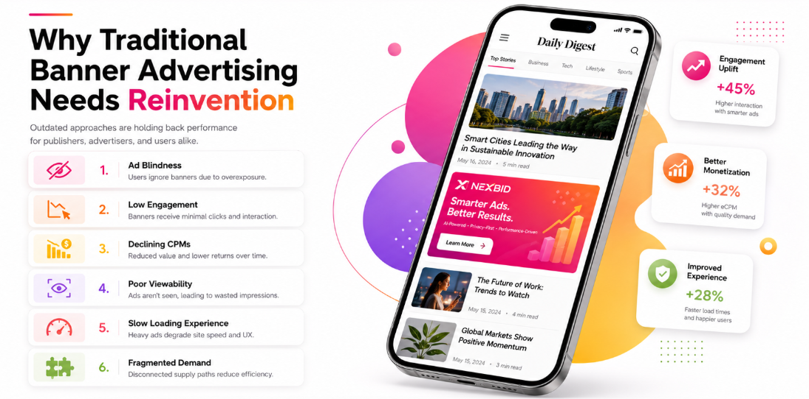

NEXBID Solutions
Smarter advertising formats.
Stronger monetization.
Flexible, attention-led advertising experiences designed to help publishers increase competition, engagement and yield across every opportunity.
The opportunity
Traditional banners need a smarter future.
NEXBID transforms familiar placements into more engaging, competitive and valuable advertising experiences—without asking publishers to reinvent their inventory.

Illustrative concept. Performance outcomes depend on inventory, demand and implementation.
See every format in action
Six formats. One seamless journey.
Scroll to explore how each format behaves inside a publisher experience.
NexBanner
Four formats. One 300×250 placement.
Inside a standard news-page ad unit, NexBanner rotates through Rich Media, Video, Banner and Native opportunities automatically.
NexPrompt
The ad moves with the reader.
As the news article scrolls, the 300×250 NexPrompt creative transfers from the first placement to the next eligible ad unit in view.
NexSlider
Impact that slides naturally into view.
A high-impact ad unit enters from the side of a desktop news experience, remains visible briefly and exits without interrupting the article.
NexDynamic
One creative. Every eligible shape.
NexDynamic moves like NexPrompt, then adapts its layout and dimensions to match a 300×250 unit, a 300×600 unit and finally a sticky placement.
Any opportunity.Adapting live
NexVig
A simple, premium vignette.
When the reader moves between pages, a full-screen vignette appears briefly and then clears for the next article.
Reader opens the next story
NexSticky
Video and banners that stay in view.
A closable sticky unit remains anchored below the article while automatically rotating between sample video and banner creatives.